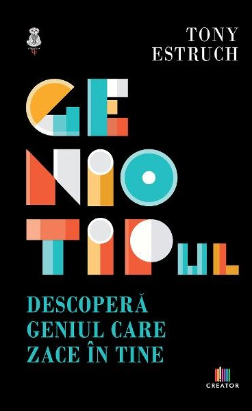

Geniotipul. Descopera geniul care zace in tine
Tony Estruch
A iubi ceea ce facem este secretul pentru a realiza lucruri marete in viata, iar pentru aceasta trebuie sa stim care este pasiunea si geniul nostru. Nimeni nu se pricepe la toate, dar toata lumea este grozava la ceva, pentru ca toti avem un dar special care ne face unici. Scopul acestei carti este de a descoperi si de a pune in valoare acel ceva special. Pentru a-ti desfasura talentul si a-l oferi lumii, trebuie mai intai sa stii ce fel de geniu esti. Cu alte cuvinte, trebuie sa va cunoasteti geniotipul.